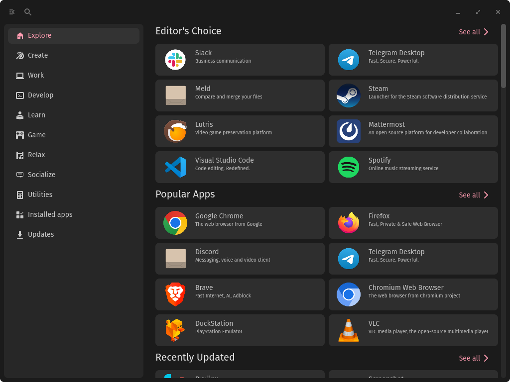

So i tried recently the cosmic alpha on my machine and wanted to give my personal opinion on it but first
-- What is Cosmic?
For those who have been living under a rock, recently cosmic desktop is a new DE made by the creators of PopOS aka System76 and is written from the ground up with the Rust programming language and I recently installed it on my machine to give it a shot, and I was pretty surprised by it.
-- The Good
The Cosmic DE is in my opinion pretty nice looking, I really love that style of design, and its design language is pretty coherent among its set of cosmic native apps which include a text editor:
{kind=link}
a terminal which i have currently set as my default terminal btw :) :
{kind=link}
a files app:

an app store:
{kind=link}
and a screenshot utility
While the number of apps is not that great -- compared to KDE or gnome's ecosystem since it is an alpha after all -- it is still enough for basic use of the desktop without relying on other third party apps. The Desktop in itself is rather nice and while some animations are missing like for going in and out of the overview as well as some interactions being somewhat buggy it is rather stable and in the short while that I have used it, the DE has not crashed once which is a feat in itself however I have had the cosmic settings app crash a few times on me while I was messing with the settings, but I'll let it slide since this is an alpha and will get fixed before the stable release
Now the desktop itself is also rather nice, while I am not a fan of space themed stuff in general, changing it for cosmic is simply a matter of changing the background to one you prefer, I personally removed the dock as I am not a fan of docks in general I just have the panel enabled so this what my current setup looks like -- also I use arch btw --
{kind=link}
Now onto one of the biggest features for cosmic, The Tiller, aka a tilling windows manager backed in cosmic, PopOS has been known for a while for ease of install of NVIDIA drivers, but also for it's tilling gnome extension which allows you to use a tilling window manager whilst still in the comfort of a full features DE -- gnome in the case of pre-cosmic PopOS -- and I am happy to say that it works pretty well now you will encounter some bugs such as flashing windows when resizing and some apps not accepting to be resizing smaller than a certain size, but that is something that will probably get fixed
-- The Bugs
Now while I am not a full-time cosmic user since it is still not fully released I wouldn't call this part the
bad but more the bugs and inconveniences that I have encountered, as an example when moving windows to another
workspace through the overview by dragging it to another workspace the window sometimes refuses to change
workspace
Also as stated previously, when using the tilling mode some windows flicker when resized or moved, and it
isn't the smoothest experience when, for example, compared to hyprland, some desktop interactions are strange,
as an example, when alt tabbing quickly, most DEs would switch you between the current windows and the one
focused before the current, but cosmic just lists the windows based on its creation, so if you open Firefox
first, it will always stay as the first item no matter what you open next, which is... a choice I
guess, but
there will probably be an option to customize it
Also, some apps decide to fade into oblivion before reappearing which is quite special, as well as some
apps
refuse to resize using Super+M2, which is a deal breaking since I remove the header bar in some app I use
since they look better or provide more window area
But that is within my expectations seeing as it is an alpha
There are also quite a few theming issues with Qt apps in particular where they either don't have the theme or
the wrong cursor or wrong scaling, which is one of the quirks of having multiple apps with different
frameworks
-- My Final Thoughts
While I am impressed by System76's Cosmic DE, I will keep an eye on the future development of the project and
if they continue in this direction I might just switch from KDE's plasma to Cosmic
Also, this entire article was written in the cosmic text editor in the Cosmic DE :)
Thank you for reading!